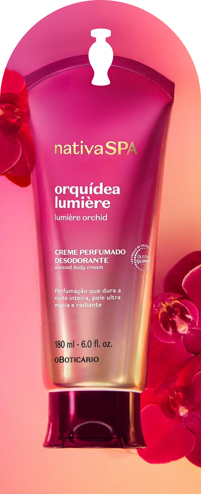
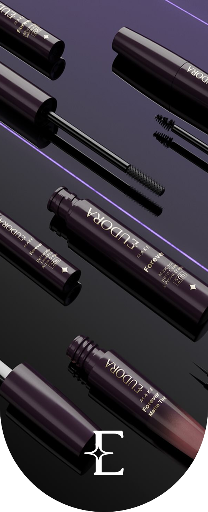

Contexto & Problema
O custo da ausência de uma linguagem de design
Em 2019, o Grupo Boticário iniciou o processo de internalização das interfaces digitais, até então mantidas por fornecedores externos, assumindo o controle da experiência, do código e da forma como os produtos digitais eram concebidos. Essa transição evidenciou uma fragmentação estrutural entre sistemas e canais, como e-commerce, venda direta, franquias e ambientes internos, que apresentavam padrões visuais e comportamentais desconectados, ao mesmo tempo em que as squads de produto, ainda em formação, tomavam decisões de design e desenvolvimento de forma isolada, sem referências ou acordos comuns, gerando retrabalho, inconsistências de experiência e desalinhamento entre áreas.
Internalização de produtos digitais;
Ganho de velocidade e controle da experiência;
Design, Engenharia e Produto estratégicos na companhia;
Formação das primeiras squads.
Produtos com comportamentos e visuais distintos;
Inconsistência e baixo reconhecimento de marca;
Decisões de design e desenvolvimento tomadas de forma isolada;
Retrabalho, desalinhamento e incoerência de experiência.
Resultados Chave
Design em escala como elemento transformador do negócio.
Foi desse contexto que nasceu o Flora, uma linguagem de design que, mais do que um sistema de componentes, tornou-se uma infraestrutura conceitual para todo o ecossistema digital do Grupo Boticário. Desde sua concepção, o Flora foi desenhado para ser multimarca, multiplataforma e multicliente, com acessibilidade e mensuração incorporadas como propriedades nativas.
100+
Squads
Construindo experiências consistentes, coerentes e de alto impacto.
-44%
Cycle Time
Redução do tempo de ciclo acelerando entrega de valor.
81PTS
CSAT
Cliente interno como promotor do ecossistema.
UP!
EXP. Cliente
Maior taxa de sucesso de conclusão de tarefa em fluxos críticos.
Processo
Abordagem de
Construção
Aculturamento & Fundamentação
Pensar em escala é projetar para o ecossistema como um todo.
A primeira etapa prática da construção do Flora foi o aculturamento. A proposta, apesar de tecnicamente sólida, exigia o convencimento de stakeholders, o alinhamento entre áreas e o entendimento coletivo de que um design system não é apenas um repositório de componentes, mas uma forma de pensar e operar. Foram produzidos materiais de sensibilização, apresentações e sessões de trabalho com lideranças de tecnologia, produto e design. Esse processo abriu espaço no backlog das squads e consolidou o apoio necessário para o desenvolvimento da primeira prova de conceito.
A imersão Estabelece as Premissas que orientam o processo
A fase de imersão combinou a análise aprofundada das diretrizes de branding e tom de voz das diferentes marcas, o mapeamento dos padrões, componentes e comportamentos presentes em todos os produtos digitais do grupo, entrevistas estruturadas com stakeholders de Marca, Produto, Engenharia e Design, além de futuros usuários internos, e um benchmark com design systems multimarcas de grandes players do mercado. A partir desse processo, foram estabelecidas as premissas que orientaram todo o projeto.
A Fundamentação é concretizada em uma Estrutura de Tokens semânticos centrada no usuário
Sistema de cores Tematizado e acessível
Orientadas ao contexto de uso, reforçando padrões de interação e preservando acessibilidade em todos os contextos de aplicação.
Espaçamentos agnósticos e harmônicos
Proporção nativa entre PXs, PTs e DPs estabelecendo regras de composição de 4 e 8 unidades.
Tipografia responsiva e versátil
Legibilidade, hierarquia e composição otimizadas por breakpoint.
Estilos de caracterização de marca
Tom de voz sob medida para cada marca.
Validação de hipótese
Prova de Conceito
e Craft Gerando
Resultados
Concretos.
A primeira aplicação prática da linguagem ocorreu no Portal de Cadastro de Revendedoras, projeto que se tornaria decisivo na validação do sistema. O planejamento original do portal previa o desenvolvimento de dois sites distintos, um para O Boticário e outro para Eudora, ambos com a mesma estrutura de fluxo e propósito: cadastrar novas revendedoras. Ao identificar essa duplicidade, foi proposta uma arquitetura única, tematizável e escalável, capaz de representar ambas as marcas sem repetição de código. Essa decisão reduziu imediatamente o esforço técnico e abriu caminho para validar, em ambiente real, o potencial de reutilização e aceleração do Flora.

Infra
Imersão
Prototipação
Testes
Desenvolvimento
Time


Resultados
Aceleração de roadmap em 5 meses e redução do esforço de manutenção
Ao fim do ciclo, o portal foi entregue em quatro semanas, contra seis meses previstos para o desenvolvimento independente dos dois sites. A entrega demonstrou que qualidade e velocidade não são opostos: quando a fundação é sólida, o craft acelera.
Imersão
Análise de dados, entrevistas com stakeholders e times de atendimento à revendedora e surveys com usuários.
Definição
Dores, oportunidades e critérios de sucesso.
Concepção & Validação
Análise de dados, entrevistas com stakeholders e times de atendimento à revendedora e surveys com usuários.
Especificação
Documentação dos componentes gerados e handoff para desenvolvimento.
Escala
Após o sucesso da prova de conceito, escalar o Flora foi escalar resultados
O sucesso da POC consolidou o patrocínio executivo e permitiu a formação de um time dedicado ao Flora. A meta inicial previa embarcar três produtos digitais no primeiro ciclo e, superando a expectativa, dezenove produtos foram integrados ainda no primeiro ano. Essa expansão foi viabilizada pela combinação entre duas estratégias: a de acoplamento e a de contribuição via inner source.
Impacto mensurável em todas as dimensões do negócio
Operação
Sistema
Experiência
Produto
Negócio
O crescimento rápido, porém, trouxe aprendizados valiosos
Crescimento & Desafios
Esse crescimento acelerado trouxe impacto direto para o negócio, mas também expôs desafios estruturais típicos de uma fase de escala. Estes pontos evidenciaram a necessidade de evoluir a estratégia para sustentar o crescimento sem comprometer coerência, qualidade e eficiência.
600%
Adoção
Superação da meta de adoção em 600%;
Governança & Estratégia
A partir das dores identificadas durante a expansão inicial, foi estruturada uma estratégia de governança baseada em duas frentes complementares.
Inner Source
Em squads mais maduras, adotou-se o modelo de inner source, no qual os próprios times contribuíam com evoluções do sistema, submetidas à revisão de qualidade, acessibilidade e consistência pelo time Flora, permitindo crescimento orgânico da biblioteca.
Acoplamento
Em contextos menos maduros, o time Flora atuou de forma acoplada às squads, cocriando componentes e telas em contexto real e transferindo conhecimento diretamente, acelerando a adoção da Design Language.
Perenidade & Maturidade
Consolidado, o Flora evoluiu para um novo estágio
As Compositions agrupam múltiplos componentes para formar módulos completos de jornada, como login, cadastro e checkout. Elas encapsulam estrutura visual, regras de espaçamento, estados e instrumentação de eventos, representando o nível mais alto de maturidade do sistema, no qual o Design System evolui de biblioteca para plataforma de experiências reutilizáveis.
Compositions
Fluxos críticos componentizados: login, cadastro, carrinho, checkout, etc.
Consistência
Consistência de experiência e visual.
Sistêmicas
Jornadas metricadas e monitoradas em escala.
Vivas
Iteração contínua.
Mensuráveis
Taxas elevadas de conclusão de tarefa.